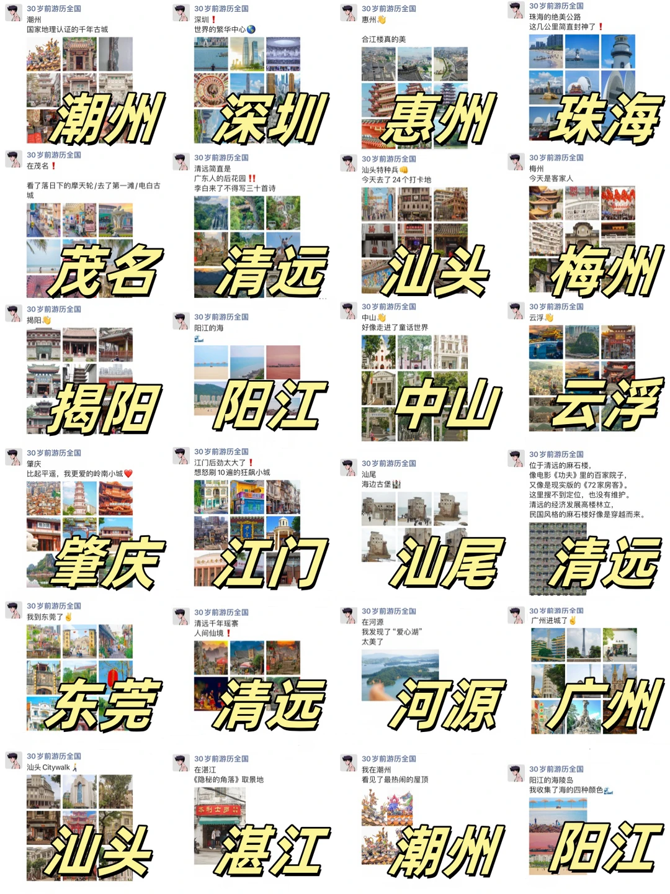
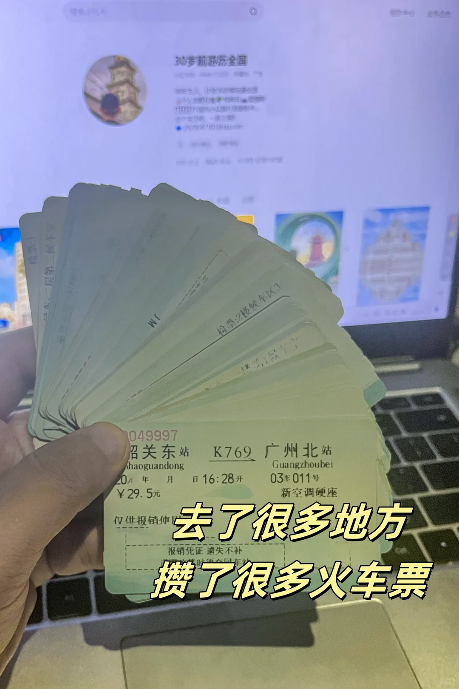
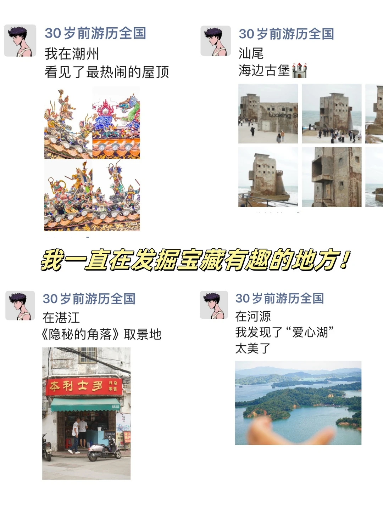
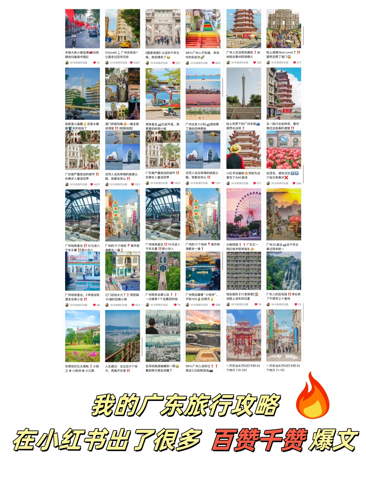
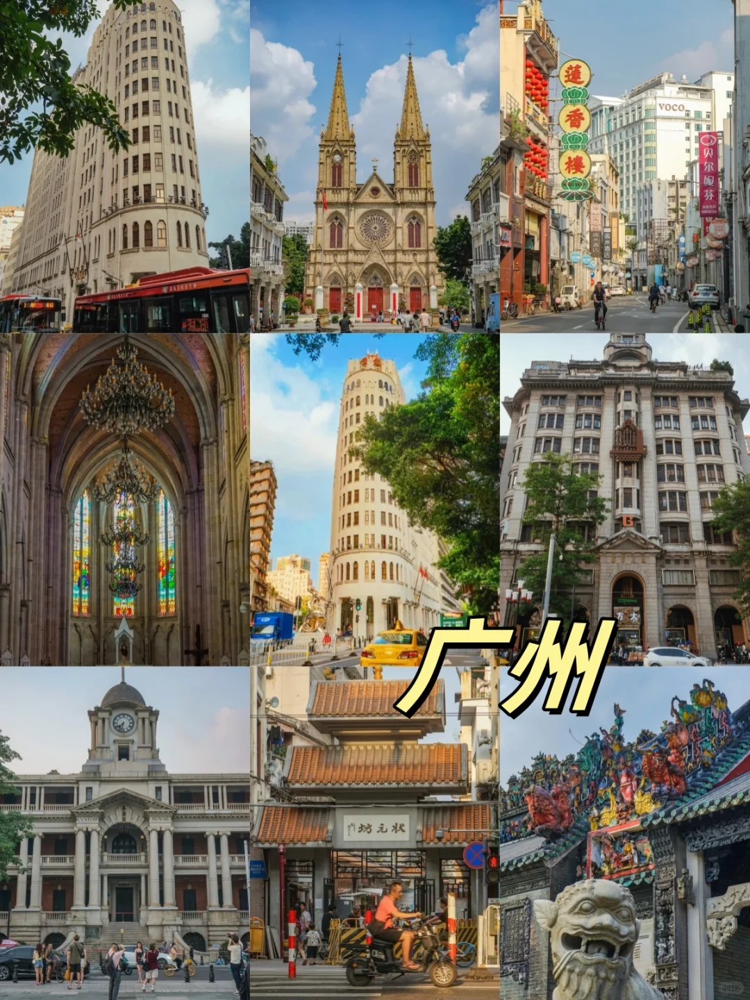
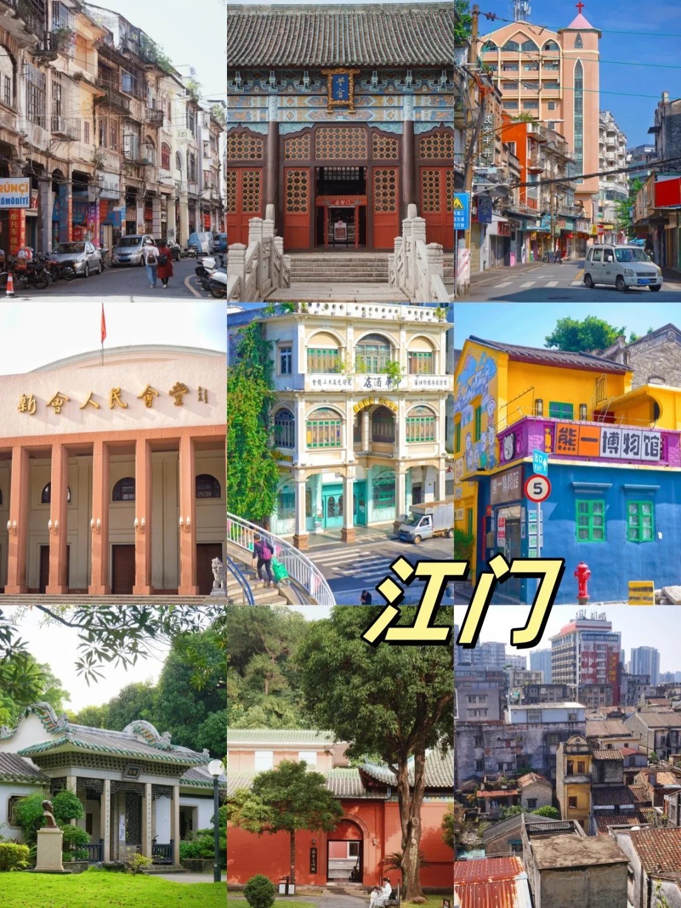
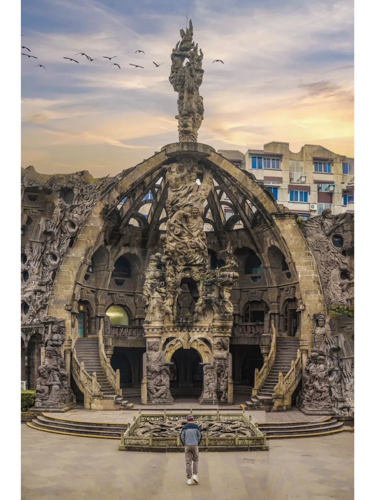
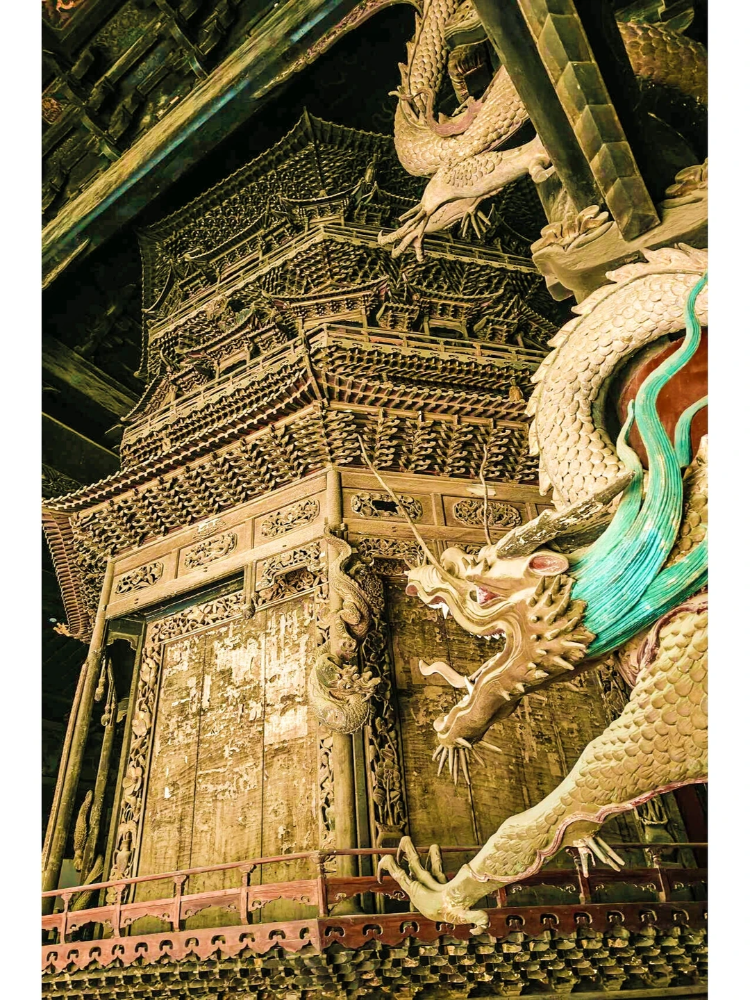

基于 526 张原始配图逐张分析的视觉系统深度报告
基于 TOP1 「广东21城」全部 15 张图片 + TOP3/TOP5 封面对比分析。
第一版我推测他是"摄影师视角"（避开人群、前景引导、黄金时刻）。看完 526 张图后发现：真实情况比这复杂得多。
真实情况：他的内容有 3 种完全不同的配图策略，根据笔记类型切换——
15 张图逐张分析。TOP1 是 7490 赞的最高赞笔记，每张图都服务一个明确目的。
版式：5×6 = 30 个城市方格（不是 21 个，多了）。每格固定格式：顶部博主头像 + "30岁前游历全国" + 城市简介（如"湛江｜世界的繁华中心"）+ 4-6 张该城市景点缩略图（小方格再嵌网格）+ 底部黄色描边黑色大字报城市名
配色：白底 + 黄色描边黑色字报（极强对比，远看也清楚）
字体：手写体 / 行楷风格（个人感强，不是印刷体）
作用："一图看完广东"的信息密度 → 读者秒懂"这一篇是汇总贴" → 看完封面就知道要收藏

📐 版式：5列×6行 = 30个城市方格，每格内嵌 4-6 张景点缩略图
🎨 配色：白底 + 黄底黑描边大字报（高对比，远看清晰）
✍️ 字体：手写体/行楷（个人感，不是印刷体）
💡 视觉钩子："一图看完广东"信息密度 + 大字报吸睛
版式：单张构图（手部特写）
主体：一只手扇形展开一堆火车票（K769 韶关东→广州北 等十几张）
背景：Mac 笔记本屏幕（暗示他在电脑前整理攻略）
底部大字报："去了很多地方 / 攒了很多火车票"
作用：用实物证据建立"特种兵旅行"人设的可信度

🎯 策略：手部特写 + 实物展示 + 黄色字报
✍️ 文字："去了很多地方 / 攒了很多火车票"
💡 心理学：用实物作为"特种兵"人设的视觉证据（不只是文字说"我去了很多地方"，而是直接展示证据）
版式：4 个 2×2 网格 + 中间黄色大字报 + 底部 2 网格 + 字报
主体：模拟小红书动态截图（头像 + 昵称"30岁前游历全国" + 地点 + 文字）
中间大字报："我一直在发掘宝藏有趣的地方！"
作用：关键视觉策略 —— 用"小红书截图"作为"内容预览"，暗示"关注我能看到更多这样的内容" → 拉新关注的视觉钩子

📐 版式：4 个 2×2 网格（模拟小红书动态）
✍️ 文字："我一直在发掘宝藏有趣的地方！"
💡 钩子原理：用"小红书截图"作为内容预览，让用户提前感受"关注我就能看到这种内容" → 关注按钮的视觉预演
版式：6×6 = 36 个小红书笔记卡片网格
主体：每张卡片 = 之前的笔记缩略图 + 标题 + 点赞数（4347、227、1437...）
底部大字报："我的广东旅行攻略 / 在小红书出了很多 🔥 百赞千赞 爆文"
作用：用真实数据证明"我之前确实发过爆文" → 建立可信度 → 引导关注

📐 版式：6×6 = 36 个真实笔记卡片网格
✍️ 文字："我的广东旅行攻略 / 在小红书出了很多 🔥 百赞千赞 爆文"
💡 心理学：用真实数据（4347、227、1437 等点赞数）证明"我说的攻略真的有效" → 解决用户的信任问题
统一模板：每张都是 9 宫格 + 右下角黄色描边黑色字报城市名
内容：每张图对应一个城市的 9 个景点（建筑/街景/美食/文化）
尺寸：1080×1440（3:4 小红书标准竖图）
作用：从第 5 张开始进入"正文干货"环节，每张图 = 1 个城市的视觉攻略

📐 版式：3×3 = 9 宫格（小红书标准 9 宫格）
🎯 标识：右下角黄色描边黑色"广州"大字报
📍 内容：石室圣心教堂、广州圆大厦、骑楼、岭南建筑、陈家祠等 9 个景点
💡 模板价值：统一模板 = 用户视觉记忆点，每篇都用 9 宫格 + 大字报，用户一看到这个模板就知道"这是 ta 的攻略"

📐 版式：3×3 = 9 宫格（与其他城市完全一致）
🎯 标识：右下角黄色描边黑色"江门"大字报
📍 内容：开平碉楼、骑楼老街、岭南建筑等
💡 收尾价值：连最后一页也用同样的 9 宫格模板，强化视觉一致性 → 用户看完最后一页还记得这个视觉风格
4 张"建立信任页"（0-3.jpg）：封面 → 实物证据 → 内容预览 → 数据证明
11 张"城市详解页"（4-14.jpg）：广州、珠海、惠州、潮汕、江门、湛江、中山... 每张都是 9 宫格 + 大字报
核心结构：信任建立 27% + 干货内容 73%（4:11 比例）
对比 TOP1（总结型）/ TOP3（社交型）/ TOP5（震撼型）三种封面的视觉策略。

📐 版式：单张大图，无任何文字/拼图/字报
🎯 主体：成都德阳石刻公园（巨大石雕建筑，像吴哥窟）
📏 比例尺：前景渺小人物背影（人物对比凸显建筑宏伟）
🎨 色调：暖色调 + 高饱和 + 戏剧性天空
💡 爆款逻辑：封面就让人以为是柬埔寨吴哥窟，完美服务"反差标题" → 用户主动想分享给朋友"看这个！"

📐 版式：单张构图，无任何文字/拼图/字报
🎯 主体：四川绵阳报恩寺内部（万佛阁龙形雕刻）
🎨 色调：暖色调（黄铜 + 朱红 + 翠绿点缀）
💥 视觉张力：龙的动势 + 高对比度 + 仰角拍摄
💡 套路："这不是 AI，这是现实" 标题 + 真实震撼图 = 反 AI 情绪钩子
| 维度 | 📋 总结型（TOP1） | 🎬 震撼型（TOP3/TOP5） | 📸 攻略型（TOP2） |
|---|---|---|---|
| 代表笔记 | 广东21城（7490赞） | 柬埔寨→成都（2114赞） | Citywalk广州百年街（4320赞） |
| 封面版式 | 30 宫格城市拼图 | 单张大图，无文字 | 9 宫格景点 |
| 是否有字报 | ✅ 30 个城市名字报 | ❌ 无字报 | ✅ 右下角城市名 |
| 文字密度 | 高（30个地名） | 零 | 中（1个地名） |
| 视觉钩子 | 信息密度（"一图看完"） | 画面震撼力 | 景点代表性 |
| 情绪 | 理性（汇总感） | 感性（冲击感） | 实用（攻略感） |
| 适用场景 | 系列汇总、年终总结 | 冷门目的地、反差爆款 | 具体路线、Citywalk |
| 收藏率 | 58% | 82% | 109% |
| 分享率 | 21% | 140% | 56% |
三种封面策略的分享率差异巨大：
对百思传媒的启示：
这是他用得最多的模板（攻略型），几乎所有"具体路线"笔记都用这个。
看完整 526 张图后发现，账号有 5 个"暗藏的视觉策略"，第一版报告没看出来。
这 5 个"暗藏策略" 比表面的"视觉风格" 更值得学习：
百思做影视类账号时：
基于以上分析，对百思做账号时的可学性做评分。
| 视觉元素 | 可学性 | 难度 | 百思怎么做 |
|---|---|---|---|
| 9 宫格模板 | ⭐⭐⭐⭐⭐ | 极低（直接套模板） | 第一周就能上手 |
| 右下角黄色字报 | ⭐⭐⭐⭐⭐ | 极低（固定样式） | 第一周就能上手 |
| 30 宫格封面 | ⭐⭐⭐⭐ | 低（需要 PS 基础） | 有 30 张图就能做 |
| 火车票实物证据 | ⭐⭐⭐ | 中（需要实物素材） | 用剧照/拍摄花絮替代 |
| 小红书截图复用 | ⭐⭐⭐⭐⭐ | 低（设计软件可做） | 用微博/抖音截图替代 |
| 数据证明页 | ⭐⭐⭐⭐⭐ | 低（用真实数据） | 用票房/播放量数据 |
| 人作比例尺摄影 | ⭐⭐ | 高（需要摄影技能） | 可学但需 1-3 月练习 |
| 黄金时刻构图 | ⭐⭐ | 高（需要摄影技能） | 可学但需 1-3 月练习 |
| 高饱和暖色调 | ⭐⭐⭐⭐ | 低-中（滤镜可调） | 用 VSCO/醒图预设 |